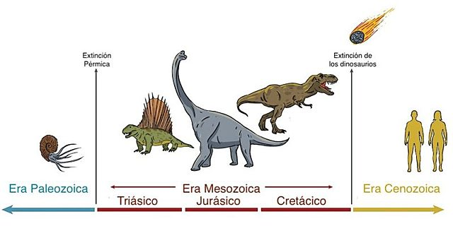

Los dinosaurios divergieron de sus ancestros arcosaurios entre mediados a finales del período Triásico, aproximadamente 20 millones de años después de que la extinción masiva del Pérmico-Triásico acabara con un estimado del 95 % de toda la vida en la Tierra. La datación radiométrica de la formación rocosa que contenía los fósiles del género primitivo de dinosaurio Eoraptor ha arrojado una fecha de 231.4 millones de años, estableciendo su presencia en el registro fósil del Triásico. los paleontólogos creen que Eoraptor se parece al ancestro común de todos los dinosaurios; es decir, que de ser así los primeros dinosaurios eran animales depredadores pequeños y bípedos. El descubrimiento de pequeños ornitódiros parecidos a dinosaurios como Marasuchus y Lagerpeton en los estratos del Triásico Medio de Argentina apoya esta idea; los análisis de los fósiles de estos animales sugieren que estos animales eran ciertamente pequeños depredadores bípedos. Los dinosaurios pueden haber aparecido tan tempranamente como hace 243 millones de años, lo que es indicado por los restos de Nyasasaurus de ese período, aunque los fósiles conocidos de este animal son demasiado fragmentarios como para determinar si en verdad era un dinosaurio o un pariente muy cercano de estos.
